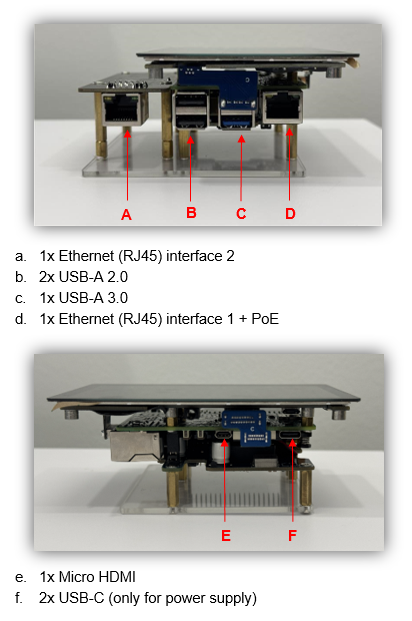
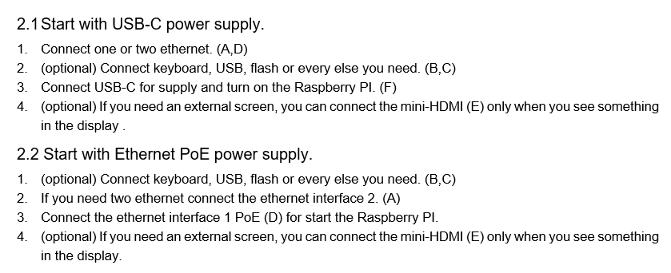

Packet recording
History
More
ip
ip
More option
Toggle Fullscreen
Reboot the RPI
Turn off the RPI
Extract USB device
Restart PacketSnifferApp
Turn off PackekSnifferApp
Access to file explorer
Access to terminal
Update application
Update OS
Version
App
-
tcpdump
-
OS
-
NeutralinoJs
-
node
-
npm
-
GIT
-
bridge-utils
-
User documentation
1 . Connection

2 . How to connect

3 . For more info
Look at the file “RaspberryPiNetwork.pdf”.